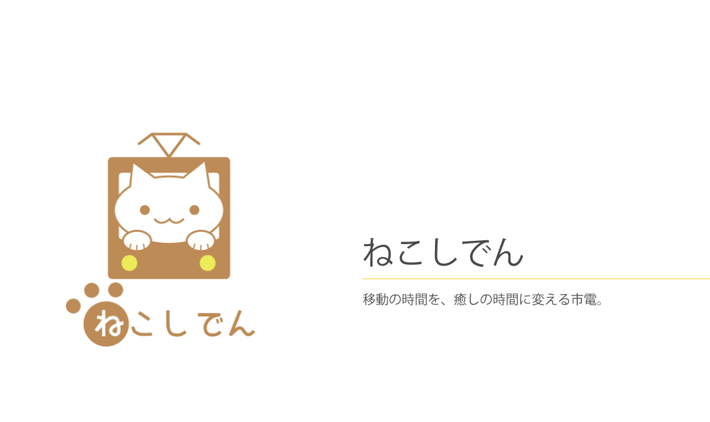
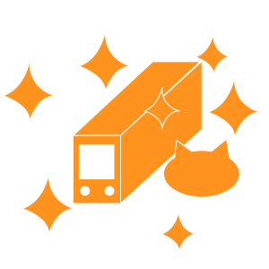

- 現代人はなかなか自分をいたわる時間を取ることができないように感じます。そんな人たちの移動時間を気軽に癒しの時間に変える。
それがねこしでんです。移動の時間を移動だけで終わらせない。
移動以外の付加価値を市電に。何気ない時間を癒しの時間に。
- 里親が見つかる
- 多くの人の身近にある市電が里親探しの場になることで、里親が見つかりやすくなる。

- 癒しの時間を得られる
- 市電での移動時間に気軽にネコと触れ合う癒しの時間を得られる。

- 利用者の増加が期待できる
- ネコのいる市電を提供することで、普段市電に乗らない人にも市電を利用してもらえる可能性が増える。
- この作品は、ユーザ・センタード・デザインという授業で制作しました。
この授業で、"函館市電の新しい形を提案する"という課題が出され、グループごとに制作しました。

- アイデアを出し合う

- イベント電車にアイデアの対象をしぼる
- イベントというアイデアを元に、"ねこしでん"の提案

- 模型の制作、アイデアのまとめ

- 中間発表

- 中間発表で得たフィードバックを元にアイデアのブラッシュアップ